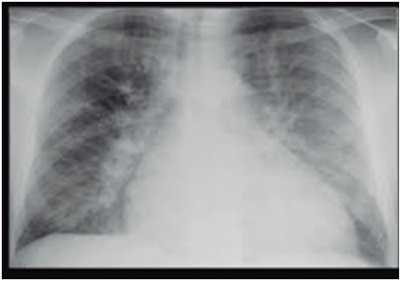
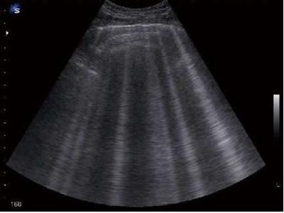

Questão 1 · Transplante Cardíaco · Inotrópicos · 4000190745O fármaco vasoativo que apresenta metabólitos com maior meia-vida, constantemente usado em pacientes em la de transplante cardíaco que, por necessidade de suporte inotrópico, devem permanecer hospitalizados, é o(a):
A Levosimedan.
B Epinefrina.
C Norepinefrina.
D Nitroprussiato de sódio.
Questão 2 · Classif icação · 4000188207D. So a, 50 anos, paciente com Insu ciência Cardíaca (IC) descompensada por infecção secundária, chega no PS com hipotensão arterial, extremidades frias, pulso liforme e oligúria. Qual a Classi cação Clínico- Hemodinâmica em que esse paciente se encontra?
A Quente e seco.
B Frio e congesto.
C Quente e congesto.
D Frio e Seco.
Questão 3 · Classif icação · Abordagem terapêutica · 4000188206D. So a, 50 anos, paciente com Insu ciência Cardíaca (IC) descompensada por infecção secundária, chega no PS com hipotensão arterial, extremidades frias, pulso filiforme e oligúria. Considerando o caso anterior, qual seria a melhor conduta no primeiro atendimento a D. Sofia no PS?
A Hidratação com cristaloide com 20mL/Kg de peso.
B Usar diurético oral e ajustar a dose das medicações de uso contínuo.
C Hidratação cautelosa: 250mL de cristaloide.
D Usar diurético endovenoso e ajustar a dose das medicações de uso contínuo.
Questão 4 · Diuréticos · Oxigenioterapia e suporte ventilatório · Vasodilatadores endovenosos · 4000186619Homem, 66 anos, com diabetes tipo 2, obesidade e hipertensão arterial sistêmica de longa data, foi admitido na emergência de um hospital terciário por dispneia intensa e sudorese. Ao exame físico: PA: 230/120 mmHg, frequência respiratória: 26 mrpm, frequência ventricular: 140 bpm, saturação de O2: 78% em ar ambiente; apresentava crepitantes bilaterais até 2/3 inferiores à ausculta pulmonar, turgência jugular a 45 graus, edema de ++/4 em membros inferiores e extremidades frias. Familiares relataram má adesão do paciente ao tratamento medicamentoso para HAS e DM, além de uso frequente de anti-inflamatórios não-esteroides para alívio de dores osteoarticulares. Não tinha histórico de infarto do miocárdio ou AVC. ECG realizado na admissão mostrou taquicardia sinusal, sobrecarga atrial e ventricular esquerdas e alterações secundárias da repolarização ventricular. Dentre as alternativas apresentadas, assinale a que apresenta a opção correta para o manejo inicial desse caso.
A Intubação orotraqueal/ventilação mecânica; metropolol EV em bolus; dobutamina EV em bomba de infusão
B Furosemida EV; nitroprussiato de sódio EV em bomba de infusão; ventilação mecânica não invasiva (BIPAP)
C Morfina EV em bolus; furosemida EV em bolus; amiodarona EV em dose de ataque; intubação orotraqueal/ventilação mecânica
D Furosemida EV em bolus; ventilação mecânica não invasiva (BIPAP); dobutamina EV em bomba de infusão
Questão 5 · Diuréticos · Vasodilatadores endovenosos · Classif icação · 4000183509Paciente de 55 anos, diabético, hipertenso e obeso de longa data, com passado de falta de ar aos esforços procura a emergência com piora da dispneia e edema importante em membros inferiores. Ao exame físico, Glasgow 15, PA 160x100mmHg, estase jugular importante a 45 graus, bulhas rítmicas a 2 tempos, frequência cardíaca de 105bpm, estertores creptantes e nas bolhas em bases de ambos hemitórax e hepatomegalia discreta. Apresenta boa perfusão periférica e edema de membros inferiores, simétricos, até joelhos. Analisando o RX de tórax realizado na sequência, o diagnóstico mais provável e a conduta imediata seriam:

A Broncopneumonia. Ceftria[ona 1g + Claritromicina 500mg IV;
B Insuficiênciacardíaca congestivoperfil quente e congesto. Diuréticos e vasodilatadores;
C Insuficiência cardíaca congestivo perfil frio e úmido. Diuréticos e dobutamina IV;
D Edema agudo de pulmão hipertensivo. Nipride IV e diurético de imediato.
Questão 6 · Insuf iciência Cardíaca Aguda · 4000182579Em relação aos quadros de insuficiência cardíaca, assinale a alternativa correta.
A Pacientes com perfil B se beneficiam do uso de diuréticos devido à presença de congestão.
B Pacientes com perfil C são aqueles que melhor respondem ao uso de oxigênio, mesmo que não estejam hipoxêmicos.
C Pacientes com perfil A se beneficiam de reposição volêmica, em geral suficiente para trazer melhora terapêutica.
D Dosagem isolada de peptídeo natriurético tipo B (BNP) < 100 pg/L confirma a presença de insuficiência cardíaca.
E Dosagem isolada de N-terminal pro-peptídeo natriurético tipo B (NT-pro-BNP) entre 200 e 300 pg/L confirma a presença de insuficiência cardíaca.
Questão 7 · Insuf iciência Cardíaca Aguda · 4000168579Um paciente de 55 anos, hipertenso, diabético, dislipidemico e portador de insu ciência cardíaca com fração de ejeção reduzida (ICFEr), com fração de ejeção de 30%, dá entrada na emergência com queixa de lipotímia. Ao exame físico: Paciente vigil, hipocorado 1+/4+, anictérico, acianótico, eupneico em ambiente, afebril. Sinais vitais: PA: 70x 50mmHg, FC 96bpm, SO2 87°%. AR: Murmúrio vesicular universalmente audível sem ruídos adventícios, ACV: RCR 2T, sem sopros, bulhas normofonéticas, MMII: sem edema, perfusão capilar periférica lenti cada. Segundo a classificação de Stevenson, o perfil deste paciente e a conduta inicial são respectivamente:
A Perfil A e Furosemida 20-40mg IV;
B Perfil B e Dobutamina 5 mcg/kg/min IV;
C Perfil L e Soro fisiológico 250ml IV;
D Perfil D e Nitroglicerina 5 a 10mcg/min IV;
E Perfil C e Oxigenação por membrana extracorpórea (ECMO).
Questão 8 · Diuréticos · Oxigenioterapia e suporte ventilatório · Abordagem terapêutica · 4000168103Paciente portadora de cardiopatia chagásica com insu ciência cardíaca procura o pronto atendimento com quadro d e dispneia e edema de membros inferiores. Ela refere que recentemente parou de utilizar as medicações que fazia u s o previamente e passou a ingerir mais sódio. Em seu exame físico, a paciente apresenta-se com ortopneia, crepitações difusas na ausculta pulmonar e edema ++++/IV. Seus vitais revelam: PA 104x66 mmHg, FC: 104bpm, FR: 24ipm, SpO2 88% (em ar ambiente), tempo de enchimento capilar de 2 segundos e extremidades bem perfundidas. Seu último ecocardiograma havia sido realizado há 1 ano e demonstrava dilatação biventricular com uma fração de ejeção de 36%. Qual seria o manejo adequado para esse paciente nesse momento?
A Iniciar suporte ventilatório não invasivo, infusão intravenosa de diurético de alça (furosemida) e vasodilatadores.
B Iniciar suporte ventilatório invasivo, infusão intravenosa de diurético de alça (furosemida) e inotrópicos (dobutamina).
C Iniciar oferta com Oxigênio em alto fluxo, infusão intravenosa de diurético de alça (Furosemida) e digitálicos.
D Iniciar suporte ventilatório não invasivo, infusão intravenosa de diurético de alça (furosemida) e inotrópicos (Dobutamina).
E Iniciar oferta com Oxigênio em alto fluxo, infusão intravenosa de diurético de alça (Furosemida) e beta bloqueadores.
Questão 9 · Insuf iciência Cardíaca Aguda · 4000167121Tratamento f armacológico da insuf iciência cardíaca com f ração de ejeção reduzida Uma mulher de 75 anos procura atendimento médico com queixa de falta de ar aos mínimos esforços. Possui histórico de insu ciência cardíaca com fração de ejeção reduzida. Ao exame, apresenta estertores crepitantes em bases pulmonares, pressão arterial (PA): 160x100mmHg, perfusão distal adequada e edema de membros inferiores. Diante do exposto, assinale a alternativa correta.
A O uso de dobutamina diminui o risco de morte.
B Apresenta perfil hemodinâmico quente e úmido.
C Expansão volêmica com cristaloides está indicada nesse caso.
D O uso de milrinone está indicado e impacta na sobrevida da paciente.
E O uso de garrotes em membros, para diminuir a pós-carga, está indicado.
Questão 10 · Vasopressores · Tratamento · 4000173902Em relação às drogas vasoativas, frequentemente utilizadas em terapia intensiva, podemos afirmar que:
A A dopamina, precursora natural da noradrenalina e da adrenalina na via de síntese das catecolaminas, tem efeito inotrópico negativo e cronotrópico e dromotrópico positivos.
B O efeito dopaminérgico da dopamina é indicado para a nefroproteção nos pacientes com lesão renal aguda, se utilizado nas doses baixas (1
C A adrenalina é um fármaco com afinidade para se ligar aos receptores
D A vasopressina, ao se ligar aos recetores V1, causa vasoconstrição pela contração do músculo liso vascular, e pela ligação aos recetores V2 promove a reabsorção de água ao nível do sistema excretor renal.
Questão 11 · Classif icação · 4000146895Paciente de 55 anos, sexo feminino, com infarto do miocárdio com supra de ST de parede anterior há 2 anos. Não foi realizado trombolítico ou angioplastia primária na ocasião. A paciente foi encaminhada ao ambulatório de cardiologia realizando acompanhamento regular. Estava em uso de carvedilol 6,25 mg a cada 12 horas, lisinopril de 5 mg e furosemida de 40 mg diariamente. Fazia uso irregular dos medicamentos no último ano. Há 2 dias foi admitida em pronto-socorro com quadro de piora da dispneia nas últimas 48 horas. Apresentava sintomas de tosse e ortopenia. Na avaliação inicial apresentou-se taquidispneica, com palidez cutânea, sonolência e aferição de PA em 91 x 68mmHg, saturação de oxigênio em 91%, estertores crepitantes em base de pulmão direito, estase jugular presente, reflexo hepatojugular positivo, presença de ascite e perfusão periférica lenti cada com extremidades frias. A análise inicial do eletrocardiograma evidenciou ritmo sinusal taquicárdico com frequência cardíaca de 114 bpm e área eletricamente inativa na parede anterior. Assinale a alternativa que corresponde ao perfil hemodinâmico, causa da descompensação e medidas iniciais adequadas.
A Cardiopatia chagásica com IC descompensada. Perfil C (frio e úmido. Início de digitálico venoso e amiodarona. Provável causa de descompensação: infecciosa.
B Cardiopatia hipertensiva com IC descompensada. Perfil L (frio e úmido. Início de diurético venoso e inibidor da enzima conversora de angiotensina. Provável causa de descompensação: má aderência terapêutica.
C Cardiopatia isquêmica com IC descompensada. Perfil B (frio e úmido. Início de digitálico venoso e milrinone. Provável causa de descompensação: infarto agudo do miocárdio.
D Cardiopatia isquêmica com IC descompensada. Perfil C (frio e úmido. Início de diurético e inotrópico imediato para controle de sintomas. Provável causa de descompensação: má aderência terapêutica.
E Cardiopatia isquêmica com IC descompensada. Perfil B (quente e úmido. Início de digitálico venoso e beta- bloqueador. Provável causa de descompensação: má aderência terapêutica.
Questão 12 · Abordagem terapêutica · 4000145590Em pacientes com descompensação aguda de insu ciência cardíaca, que se apresentam em pronto atendimento com padrão de congestivo associado a boa perfusão tecidual periférica (per l quente e úmido), é princípio fundamental de seu tratamento:
A Prescrição sistemática e rotineira de vasodilatador parenteral, como nitroglicerina em bomba de infusão, com objetivo de se aliviar pós-carga cardíaca
B Suspensão transitória de suas medicações de uso habitual, especialmente betabloqueadores, para se evitar evolução para perfil frio de descompensação
C Utilização de diurético de alça parenteral em dose otimizada, mesmo em pacientes que apresentem piora de função renal à admissão hospitalar
D Utilização de diureticoterapia preferencialmente por via oral, com objetivo de facilitar esquema de prescrição para alta do paciente
Questão 13 · Abordagem terapêutica · 4000138627Um paciente de 64 anos de idade, obeso, hipertenso, diabético, ex-tabagista (de cinco maços/ano) e com brilação atrial crônica, faz uso de enalapril 10 mg (duas vezes ao dia), atenolol 5 0 mg/dia, anlodipino 10 mg/dia, metformina 2 g/dia e warfarina 5 mg/dia. Foi encaminhado para consulta ambulatorial, devido à queixa de dispneia progressiva, nos últimos meses, aos médios e aos pequenos esforços. Ao exame clínico, bulhas arrítmicas hipofonéticas em 2T, sem sopros, FC de 77 bpm, PA de 130 x 70 mmHg, sat. de O2 de 94% em ar ambiente e ausculta prejudicada devido a seu porte físico, mas com impressão inicial de MV+, bilateralmente, sem ruídos adventícios. Já realizou diversos exames para a investigação desse quadro, entre eles, ECG: ritmo de brilação atrial e sinais de hipertro a ventricular esquerda; ECO: aumento de átrio esquerdo, hipertro a de ventrículo esquerdo, FE 64% e PSAP 42; espirometria: distúrbio ventilatório restritivo leve; teste ergométrico: negativo para isquemia – submáximo; e laboratoriais: hemograma, função renal, eletrólitos e BNP dentro da normalidade. Com base nessa situação hipotética, assinale a alternativa que apresenta a conduta mais adequada.
A aumentar a dose de atenolol para 100 mg
B substituir o atenolol por amiodarona
C prescrever nitrato
D iniciar furosemida
E iniciar formoterol + budesonida
Questão 14 · Avaliação inicial · Abordagem terapêutica · 4000131305Paciente de 78 anos com histórico de insu ciência cardíaca, em tratamento irregular, é admitido no pronto socorro com quadro de dispneia. Os familiares informam que ele não vem utilizando adequadamente a medicação e tem constantemente abusado na ingesta de sódio. Na sua avaliação, encontra-se dispneico, com crepitações em pulmão bilateral e com frequência respiratória de 28 ipm. Sua Pressão Arterial é de 114x72mmHg e com frequência cardíaca de 78bpm, suas extremidades estão bem perfundidas e seus membros inferiores com edema ++/IV, sem outras alterações. Você realiza um exame de ultrassonografia a beira leito e visualiza a imagem a seguir em 4 quadrantes: Disponível em: World J Radiol 2014 Junh 28;6(6):230-7 Qual seria a melhor forma de realizar o manejo inicial do paciente anterior?

A Iniciar diurético (furosemida) associado a vasodilatador (nitroglicerina).
B Indicar apenas diurético (furosemida) de modo isolado.
C Iniciar diurético (furosemida) associados a droga inotrópica (Dobutamina).
D Iniciar inotrópico (dobutamina) de modo isolado.
E Iniciar diurético (furosemida), vasodilatador (nitroglicerina) e inotrópico (dobutamina) em associação.
Questão 15 · Exames Complementares · Diagnóstico · 4000131171Um paciente de 35 anos de idade, com miocardiopatia isquêmica dilatada com fração de ejeção prévia de 30%, encaminha- se à emergência com dor torácica em aperto há sete horas, dispneia importante e sudorese. Foram solicitados exames laboratoriais que demonstraram hemograma normal, função renal e eletrólitos normais. Seu peptídeo natriurético cerebral (BNP) era de 300 pg/mL (valor de referência até 150 pg/dL). Solicitou-se, então, o eletrocardiograma representado na figura a seguir. Fonte ECG: John Hamptom 150 ECGs problems Considerando esse caso clínico, a figura apresentada e os conhecimentos médicos correlatos, julgue o item a seguir. Ao avaliar o valor de BNP para esse paciente, pode-se afirmar que ele está com insuficiência cardíaca descompensada.

A Certo.
B Errado.
Questão 16 · Abordagem terapêutica · 4000129503Paciente masculino, 69 anos, em tratamento irregular para insu ciência cardíaca e hipertensão, procura a emergência com dispneia e edema de membros inferiores (MMII) que vem progredindo na última semana. Ao ser atendido, encontrava-se com frequência respiratória = 30 incursões/minuto, frequência cardíaca = 90 batimentos/minuto, Pressão arterial = 190 X 110 mmHg , estava orientado mas verbalizava com di culdade, observava-se turgência jugular (3+/4+) a 45 graus e edema de MMII (4+/4+). Ausculta pulmonar com crepitações em 2/3 inferiores de tórax bilateralmente, ausculta cardíaca com ritmo cardíaco regular, em 2 tempos e sopro sistólico 3+/6+ no foco mitral. Pulsos palpáveis e simétricos. Negava dor precordial, eletrocardiograma mostrava ritmo sinusal e não apresentava sinais de isquemia. Exames laboratoriais séricos mostravam função renal normal e não evidenciavam sinais de injúria miocárdica. Saturação de oxigênio = 89% em ar ambiente. Radiografia de tórax está demonstrada abaixo. Qual a melhor conduta para o caso em questão?

A Nitratos, diuréticos e beta bloqueadores.
B Dobutamina, diuréticos endovenosos, opioides e oxigênio.
C Vasodilatadores, diuréticos e ventilação não invasiva com pressão positiva.
D Ventilação não invasiva com pressão positiva, amiodarona e beta bloqueadores.
Questão 17 · Classif icação · Cardiologia · 4000120067Um paciente de 54 anos de idade, com antecedente de miocardiopatia isquêmica e fração de ejeção do ventrículo esquerdo de 35%, deu entrada no serviço de emergência devido à queda do estado geral e à dispneia progressiva. Ao exame físico, encontrava-se em mau estado geral, sonolento, com pressão arterial de 85 x 50 mmHg, frequência cardíaca de 124 bpm, frequência respiratória de 26 ipm, saturação de oxigênio de 88% em ar ambiente, tempo de enchimento capilar de 4 s e re uxo hepatojugular presente. Há estertores nos 2/3 inferiores de ambos os pulmões e presença de galope de terceira bulha na ausculta cardíaca. Com base nessa situação hipotética, assinale a alternativa correta.
A Trata-se de provável choque cardiogênico, com perfil clínico-hemodinâmico B.
B Trata-se de provável choque cardiogênico, com perfil clínico-hemodinâmico L.
C Trata-se de provável choque obstrutivo, com classificação de Forrester II.
D Trata-se de provável choque cardiogênico, com perfil clínico-hemodinâmico C.
E Trata-se de provável choque obstrutivo, com classificação de Forrester III.
Questão 18 · Diuréticos · Oxigenioterapia e suporte ventilatório · Vasodilatadores endovenosos · 4000110555Homem de 56 anos, com antecedente de cardiopatia isquêmica, em uso de ácido acetilsalicílico, sinvastatina, carvedilol, furosemida, enalapril e espironolactona, com queixa de piora da dispneia ao repouso e ortopneia. Ao exame físico encontra-se em mau estado geral, FC: 92bpm, PA: 210 x 130 mmHg, ritmo cardíaco regular com sopro sistólico mitral 2+/6+, perfusão periférica adequada, frequência respiratória de 38 incursões por minuto, ausculta pulmonar com murmúrios presentes bilateralmente com estertores nos até ápices de ambos hemitóraces, edema de membros inferiores bilateral e simétrico. Saturação de oxigênio de 85%. Qual a conduta imediata?
A Furosemida intravenosa, isossorbida via oral e ventilação não invasiva.
B Dobutamina e nitroglicerina intravenosa e intubação orotraqueal.
C Dobutamina e nitroprussiato intravenoso e máscara de oxigênio.
D Furosemida intravenosa e intubação orotraqueal.
E Nitroprussiato e furosemida intravenosa e ventilação não invasiva.
Questão 19 · Fisiologia Cardíaca · 4000102628Com relação às consequências fisiológicas da circulação extracorpórea, qual das alternativas abaixo é a correta?
A Hiperpotassemia e leucopenia
B Leucopenia e hipoglicemia
C Trombocitopenia e ativação do sistema de complemento
D Hipoglicemia e hiperpotassemia
Questão 20 · Abordagem terapêutica · 4000098920Homem, 75a, internado com insu ciência cardíaca. Exame físico: FC= 118 bpm, PA= 96x60 mmHg, T=36,5°C, pulsos cheios; pulmões: estertores crepitantes em bases pulmonares; membros inferiores: edema +++/+4. O TRATAMENTO FARMACOLÓGICO INICIAL VISA:
A Elevar a pressão arterial para evitar a má perfusão de órgãos vitais como rins e fígado.
B Reduzir a frequência cardíaca para diminuir o consumo de oxigênio no miocárdio.
C Promover broncodilatação para facilitar o aporte de oxigênio para circulação arterial.
D Reduzir a pré e a pós carga para melhorar o desempenho do ventrículo esquerdo.
Questão 21 · Características f isiopatológicas e clínicas · Inotrópicos · Vasopressores · 4000053641A insu ciência cardíaca com descompensação aguda (ICDA) é uma síndrome clínica heterogênea, com diferentes fenótipos de apresentação, e está associada com alta morbidade e mortalidade. Analise as seguintes assertivas sobre a ICDA: I. O primeiro princípio do tratamento da ICDA é procurar identi car o desencadeante da descompensação (como a não adesão ao tratamento, uso de antiinflamatórios, arritmia cardíaca, infecção pulmonar). II. Os diuréticos intravenosos promovem alívio rápido dos sintomas congestivos, sendo sua administração indicada mandatoriamente por infusão contínua. III. Os pacientes com edema agudo de pulmão, apresentando congestão pulmonar grave com hipóxia, se bene ciam com o tratamento que envolve diuréticos, oxigênio, ventilação não invasiva, vasodilatadores e opiáceos. IV. Os pacientes com “choque cardiogênico” preferentemente são tratados com terapia inotrópica (geralmente catecolaminas) e suporte circulatório mecânico. Escolha entre as alternativas abaixo, a que inclui assertivas corretas sobre a ICDA.
A I e II apenas.
B I e III apenas.
C II e IV apenas.
D I, II e III apenas.
E I, III e IV apenas.
Questão 22 · Vasodilatadores endovenosos · Inotrópicos · Vasopressores · 4000033291Assinale a alternativa em que os medicamentos usados no tratamento do choque cardiogênico apresentam maior efeito inotrópico do que vasopressor.
A Norepinefrina, dobutamina.
B Dobutamina, isoproterenol.
C Vasopressina, epinefrina.
D Dopamina, epinefrina.
Questão 23 · Classif icação · Abordagem terapêutica · 4000112334Homem, 66 anos, tem antecedente de cardiopatia isquêmica. Faz uso de AAS, rosuvastatina e carvedilol. Procura pronto atendimento com queixa de piora da dispneia aos esforços, que evoluiu na última semana para dispneia intensa em repouso, dispneia paroxística noturna e ortopneia. No exame físico da entrada, encontrava-se em regular estado geral, FC = 112 bpm, PA = 90 x 70 mmHg, ritmo cardíaco regular com sopro sistólico mitral 2+/6+, com irradiação para axila, tempo de enchimento capilar de 8 segundos, ausculta pulmonar presente bilateralmente com estertores nos até 1/3 médio bilateral, edema de membros inferiores bilateral e simétrico. Assinale a alternativa correta em relação à classificação da insu ciência cardíaca e conduta apropriada a ser adotada, respectivamente.
A Perfil B – furosemida intravenosa e vasodilatador via oral.
B Perfil B – furosemida e dobutamina intravenosas.
C Perfil B – furosemida intravenosa, hidroclorotiazida via oral e levosimendana intravenosa.
D Perfil C – dobutamina, furosemida e vasodilatador intravenosos.
E Perfil C – vasodilatador via oral e hidratação cautelosa intravenosa.
Questão 24 · Tratamento percutaneo da insuf iciência mitral · 4000111307São contraindicações de uso de balão intra aórtico, exceto:
A Insuficiência mitral aguda.
B Insuficiência aórtica severa.
C Aneurisma de aorta.
D Doença vascular periférica.
Questão 25 · Clínica Médica · Classif icação · Insuf iciência Cardíaca Aguda · 4000106261Homem, 68 anos, com cardiopatia isquêmica prévia, em uso de AAS, sinvastatina e carvedilol, procura pronto-socorro com queixa de piora da dispneia aos esforços, estando no momento relacionada a esforços mínimos. Na entrada, encontrava-se em regular estado geral, FC: 108 bpm, PA: 100 x 70 mmHg, ritmo cardíaco regular com sopro sistólico mitral 2+/6+, tempo de enchimento capilar de 6 segundos, ausculta pulmonar presente bilateralmente com estertores nos até 1/3 médio bilateral, edema de membros inferiores bilateral e simétrico. A classificação da insu ciência cardíaca em relação ao per l hemodinâmico de descompensação e a conduta correta são respectivamente:
A Perfil B: furosemida intravenosa e vasodilatador via oral.
B Perfil C: dobutamina, furosemida e vasodilatador intravenoso.
C Perfil B: furosemida e deslanosídeo intravenoso.
D Perfil L: vasodilatador via oral e hidratação cautelosa intravenosa.
E Perfil B: furosemida intravenosa e hidroclorotiazida via oral.
Questão 26 · Indicações de transplante cardíaco · 4000090115Qual é a principal indicação para transplante cardíaco?
A Infarto do miocárdio.
B Cardiopatia chagásica.
C Insuficiência cardíaca refratária.
D Estenose mitral.
Questão 27 · Classif icação de acordo com a gravidade dos sintomas · 4000080562A classificação da insu ciência cardíaca pelo per l clínico hemodinâmico de Stevenson é utilizado para guiar a terapêutica nos casos de insuficiência cardíaca, levando em consideração os seguintes critérios:
A Galope por B3 e B4.
B Sinais de congestão e B3.
C Presença de B3 na ausculta cardíaca.
D Sinais e sintomas de hipoperfusão e congestão.
Questão 28 · Diuréticos · Manif estações clínicas · 4000077943Inibidores da enzima conversora de angiotensina e bloqueadores dos receptores AT1 da angiotensina II Homem, 65 anos, diabético e hipertenso em uso de enalapril 20mg/dia e metformina 2g/dia, há cinco meses com cansaço aos médios esforços e edema de membros inferiores (MMII) de evolução progressiva. Exame físico: pressão arterial (PA) = 138 x 74mmHg; frequência cardíaca (FC) = 100bpm, ritmo cardíaco regular em dois tempos, turgência jugular bilateral e murmúrio vesicular (MV) diminuido em base direita. Presença de re uxo hepatojugular e edema de MMII +++/4+ até os joelhos. Foi acrescido ao tratamento usual, furosemida 40mg, VO de 12/12h. Quinze dias após o início do diurético, apresenta melhora dos sintomas, mas persiste com re uxo hepatojugular e edema +/4+ em MMII. A conduta indicada, neste momento, é:
A associar hidroclorotiazida
B acrescentar beta-bloqueador
C aumentar a dose da furosemida
D trocar a furosemida por losartana
Questão 29 · Def inição · Características f isiopatológicas e clínicas · Classif icação · 4000053721Qual das opções a seguir podem descompensar uma insuficiência cardíaca crônica?
A Exercício físico e restrição hídrica
B Adesão ao tratamento e diabetes tipo 2
C Gravidez e anemia
D Dieta descontrolada e uso de diuréticos
Questão 30 · Indicações de transplante cardíaco · Nitrato e hidralazina · Contraindicações ao transplante cardíaco · 4000038078Grandes avanços no diagnóstico, monitorização e tratamento da Insu ciência Cardíaca (IC) foram observados nos últimos anos, com impactos reais na qualidade de vida e na sobrevida dos pacientes. Somente se mostra inadequado que:
A A vasodilatação durante o exame de Hemodinâmica Pulmonar, realizada com nitroprussiato de sódio, sildenafil ou óxido nítrico, visa a pronto aumento da pressão na artéria pulmonar e da POAP.
B A cateterização da artéria pulmonar ainda é essencial para a inclusão do paciente na fila de Transplante cardíaco a fim de determinar a existência e o grau da hipertensão pulmonar, e sua reversibilidade a vasodilatadores.
C Manometria cardiopulmonar pode ser de grande auxílio no manejo desses pacientes, já que muitos estão em dependência de drogas vasoativas e/ou de assistência ventricular.
D Medida deve ser realizada antes da inclusão do paciente em fila de Transplante cardíaco periodicamente, de acordo com o protocolo de cada serviço, ou quando há mudança do quadro clínico do paciente.
Questão 31 · Diuréticos · Manif estações clínicas · Fisiopatologia · 4000034526Em quadros de insu ciência cardíaca descompensada (ICD), alterações laboratoriais são situações comuns no dia a dia. Sobre essas alterações, assinale a alternativa INCORRETA:
A Casos de hepatomegalia congestiva secundária à ICD podem cursar com elevação de transaminases no sangue.
B Pacientes com ICD que cursam com congestão hepática aguda podem cursar com clínica semelhante à hepatite aguda viral.
C Pacientes com insuficiência cardíaca em fases mais iniciais podem cursar com eletrólitos séricos totalmente normais.
D Pacientes com ICD e pressão em cunha capilar pulmonar de 13-17 mmHg comumente cursam com radiografia de tórax evidenciando redistribuição da trama vascular pulmonar e edema intersticial.
E A restrição de sódio na dieta, a utilização de diuréticos e elevações dos níveis séricos de vasopressina são fatores que contribuem para o desenvolvimento da hiponatremia na ICD.
Questão 32 · Cardiologia · 4000006031Sobre o uso de ECMO, assinale a alternativa CORRETA.
A O uso de ECMO demanda apenas cirurgião cardíaco e anestesista especializados e treinados.
B No Brasil, há farto número de publicações sobre uso de ECMO no pós-operatório cardíaco em crianças.
C O uso de ECMO é parte integrante do manejo do pós-operatório de cirurgia cardíaca em crianças.
D O tempo prolongado de VPM é fator de melhor prognóstico no uso de ECMO.
Questão 33 · Dispositivos de assistência ventricular · 4000006019Assinale a alternativa que NÃO configura indicação de ECMO no pós-operatório de cirurgia cardíaca.
A Parada cardíaca.
B Saturação venosa inferior a 50%.
C Uso de drogas vasoativas em doses supramáximas.
D Presença de defeito residual com repercussão hemodinâmica.
Questão 34 · Cardiologia · 4000005499Os pacientes com edema agudo de pulmão apresentam modelos distintos de distribuição volêmica sendo Insu ciência Cardíaca (IC) aguda nova com congestão pulmonar sem hipervolemia periférica (IC de novo). Somente sendo INADEQUADO que,
A neste modelo hemodinâmico, o tratamento tem como objetivo redistribuir o volume da circulação pulmonar para a circulação periférica.
B a melhoria da distribuição de volume é feita por ação de vasodilatadores com uso judicioso de diuréticos e suporte ventilatório com pressão positiva não invasiva de baixa pressão, para reduzir o trabalho respiratório e a hipoxemia, que podem reduzir as taxas de intubação e de mortalidade.
C o uso de ventilação não invasiva é recomendado em pacientes com congestão pulmonar associada a desconforto respiratório e/ou hipoxemia.
D é recomendável ter-se cautela com pacientes hipotensos (pressão positiva pode aumentar a pressão arterial) e em pacientes após IAM, os quais podem ter pior evolução.
Questão 35 · Avaliação inicial · Oxigenioterapia e suporte ventilatório · Vasodilatadores endovenosos · 4000125364Com relação à insuficiência cardíaca congestiva aguda, é CORRETO afirmar que:
A O uso de ventilação mecânica não invasiva reduz a mortalidade a longo prazo.
B A ultrassonografia pulmonar não ajuda no diagnóstico.
C Na ausência de hipotensão, a administração de vasodilatador é recomendada.
D A administração de morfina endovenosa reduz a taxa de internação.
E O fator desencadeador é sempre evidente e deve ser tratado agressivamente.
Questão 36 · NItratos · 4000118892Paciente de 58 anos, feminino, professora aposentada, com história de IAM com supra ST há 2 anos que na época foi submetida a angioplastia primária de artéria descendente anterior. Desde então, sofre de dispneia aos esforços habituais, porém consegue desempenhar as atividades domésticas e caminhar 200 metros sem necessitar parar para descansar. Está em uso de AAS 100 mg/dia, atorvastatina 40 mg/dia, enalapril 10 mg 2x dia, carvedilol 25 mg 2x dia e e spironolactona 25 mg/dia. Ao ECG apresenta ritmo sinusal, com frequência cardíaca de 58 bpm em repouso e área inativa de parede anterior. Seu ecocardiograma demonstrou fração de ejeção de 38% e acinesia de parede anterior do ventrículo esquerdo. Há 2 dias, apresentou quadro de coriza, obstrução nasal, febre baixa (38º C) e piora da dispneia ao repouso. Seu ECG demonstrava ritmo regular com frequência cardíaca de 78 bpm e pressão arterial de 124/68 mmHg. Apresenta estertores crepitantes até 1/3 médios e ortopneia. Diurese sem alterações. Quanto ao manejo para o quadro apresentado, analise as assertivas a seguir, marcando CERTO para verdadeiro/correto e ERRADO para falso/incorreto. O uso de nitratos endovenosos são recomendados em pacientes com per l quente e úmido como o caso descrito da paciente.
A Certo.
B Errado.
Questão 37 · Vasopressores · 4000118794Paciente de 58 anos, feminino, professora aposentada, com história de IAM com supra ST há 2 anos que na época foi submetida a angioplastia primária de artéria descendente anterior. Desde então, sofre de dispneia aos esforços habituais, porém consegue desempenhar as atividades domésticas e caminhar 200 metros sem necessitar parar para descansar. Está em uso de AAS 100 mg/dia, atorvastatina 40 mg/dia, enalapril 10 mg 2x dia, carvedilol 25 mg 2x dia e e spironolactona 25 mg/dia. Ao ECG apresenta ritmo sinusal, com frequência cardíaca de 58 bpm em repouso e área inativa de parede anterior. Seu ecocardiograma demonstrou fração de ejeção de 38% e acinesia de parede anterior do ventrículo esquerdo. Há 2 dias, apresentou quadro de coriza, obstrução nasal, febre baixa (38º C) e piora da dispneia ao repouso. Seu ECG demonstrava ritmo regular com frequência cardíaca de 78 bpm e pressão arterial de 124/68 mmHg. Apresenta estertores crepitantes até 1/3 médios e ortopneia. Diurese sem alterações. Quanto ao manejo para o quadro apresentado, analise as assertivas a seguir, marcando CERTO para verdadeiro/correto e ERRADO para falso/incorreto. A pressão diastólica de 68 mmHg confirma o per l frio e úmido, necessitando o uso de dobutamina para compensação clínica.
A Certo.
B Errado.
Questão 38 · Medicações orais · 4000118663Paciente de 58 anos, feminino, professora aposentada, com história de IAM com supra ST há 2 anos que na época foi submetida a angioplastia primária de artéria descendente anterior. Desde então, sofre de dispneia aos esforços habituais, porém consegue desempenhar as atividades domésticas e caminhar 200 metros sem necessitar parar para descansar. Está em uso de AAS 100 mg/dia, atorvastatina 40 mg/dia, enalapril 10 mg 2x dia, carvedilol 25 mg 2x dia e e spironolactona 25 mg/dia. Ao ECG apresenta ritmo sinusal, com frequência cardíaca de 58 bpm em repouso e área inativa de parede anterior. Seu ecocardiograma demonstrou fração de ejeção de 38% e acinesia de parede anterior do ventrículo esquerdo. Há 2 dias, apresentou quadro de coriza, obstrução nasal, febre baixa (38º C) e piora da dispneia ao repouso. Seu ECG demonstrava ritmo regular com frequência cardíaca de 78 bpm e pressão arterial de 124/68 mmHg. Apresenta estertores crepitantes até 1/3 médios e ortopneia. Diurese sem alterações. Quanto ao manejo para o quadro apresentado, analise as assertivas a seguir, marcando CERTO para verdadeiro/correto e ERRADO para falso/incorreto. A diminuição da dose do carvedilol é necessária, pois mesmo com febre, a paciente apresenta frequência cardíaca inadequada para seu status clínico.
A Certo.
B Errado.
Questão 39 · Diuréticos · 4000118606Paciente de 58 anos, feminino, professora aposentada, com história de IAM com supra ST há 2 anos que na época foi submetida a angioplastia primária de artéria descendente anterior. Desde então, sofre de dispneia aos esforços habituais, porém consegue desempenhar as atividades domésticas e caminhar 200 metros sem necessitar parar para descansar. Está em uso de AAS 100 mg/dia, atorvastatina 40 mg/dia, enalapril 10 mg 2x dia, carvedilol 25 mg 2x dia e e spironolactona 25 mg/dia. Ao ECG apresenta ritmo sinusal, com frequência cardíaca de 58 bpm em repouso e área inativa de parede anterior. Seu ecocardiograma demonstrou fração de ejeção de 38% e acinesia de parede anterior do ventrículo esquerdo. Há 2 dias, apresentou quadro de coriza, obstrução nasal, febre baixa (38º C) e piora da dispneia ao repouso. Seu ECG demonstrava ritmo regular com frequência cardíaca de 78 bpm e pressão arterial de 124/68 mmHg. Apresenta estertores crepitantes até 1/3 médios e ortopneia. Diurese sem alterações. Quanto ao manejo para o quadro apresentado, analise as assertivas a seguir, marcando CERTO para verdadeiro/correto e ERRADO para falso/incorreto. O uso de diuréticos de alça só estaria recomendado nos casos mais graves pelo risco de depleção e hipocalemia.
A Certo.
B Errado.
Questão 40 · Diuréticos · Vasodilatadores endovenosos · Classif icação · 4000110644Mulher, 60 anos, com antecedente de cardiopatia isquêmica prévia, em uso de AAS, Sinvastatina, Carvedilol, Furosemida e Espironolactona, procura pronto socorro com queixa de piora da dispnéia aos esforços, estando no momento relacionada a esforços mínimos. Na entrada encontrava-se em regular estado geral, FC: 104bpm, PA: 100x60mmHg, ritmo cardíaco regular com sopro sistólico mitral 2+/6+, tempo de enchimento capilar de 5 segundos, ausculta pulmonar presente bilateralmente com estertores nos até 1/3 médio bilateral, edema de membros inferiores bilateral e simétrico. A classificação da Insu ciência Cardíaca em relação ao per l hemodinâmico de descompensação a conduta correta são respectivamente:
A Perfil B; Furosemida intravenosa e vasodilatador via oral
B Perfil C; Dobutamina, Furosemida e vasodilatador intravenoso
C Perfil B; Furosemida e Deslanosídeo intravenoso
D Perfil L: Vasodilatador via oral e hidratação cautelosa intravenosa
E Perfil B: Furosemida intravenosa e Hidrocolorotiazida via oral
Questão 41 · Tratamento da Insuf iciência cardíaca · 4000099010Homem, 82a, é admitido referindo falta de ar e inchaço progressivos há duas semanas. Antecedentes pessoais: miocardiopatia dilatada. Medicações: carvedilol 25 mg/dia, enalapril 20 mg/dia e furosemida 40 mg/dia. Exame físico: regular estado geral; FC = 102 bpm; PA = 112 x 68 mmHg, Pulmões: murmúrio vesicular presente, estertores crepitantes bilateralmente; membros: edema de membros inferiores, sacral e perineal 4+/4+. Creatinina = 1,5 mg/dl; ureia = 68 mg/dl; potássio = 5,2 mEq/L. Nos quatro primeiros dias de internação faz uso de furosemida 20 mg, intravenoso de 8/8h, com melhora significativa das queixas. No quinto dia de internação refere tonturas, sem dispneia. Exame físico: FC= 88 bpm; PA = 96 x 54 mmHg, edema de membros inferiores 2+/4+. Potássio = 3,5 mEq/L; creatinina = 3,8 mg/dl e ureia = 202 mg/dl. A conduta é:
A Iniciar espironolactona.
B Diminuir a dose de carvedilol.
C Iniciar diálise.
D suspender o diurético e hidratar.
Questão 42 · Cardiologia Pediátrica · 4000095790Assinale a alternativa INCORRETA em relação aos medicamentos vasoativos.
A Vasodilatadores diminuem o tônus arterial, melhorando o débito cardíaco por redução da pós-carga, sem afetar a contratilidade.
B Inotrópicos aumentam o débito cardíaco ao elevar a contratilidade miocárdica ou a frequência cardíaca.
C Os inotrópicos diminuem o débito cardíaco por aumentar a frequência cardíaca, melhorando, assim, a performance do miocárdio.
D Vasopressores agem aumentando a resistência vascular sistêmica e o tônus arterial.
Questão 43 · Tratamento da Insuf iciência cardíaca · 4000071619Mulher de 64 anos de idade com história de miocardiopatia não isquêmica é atendida no serviço de emergência com queixa de dispneia e ganho de peso (11 kg em 2 meses). O exame físico revela estertores crepitantes bibasais, turgência jugular patológica, edema de membros inferiores e resposta da pressão arterial em raiz quadrada à manobra de Vasalva. Suas extremidades estão aquecidas, sua pressão arterial é de 110 x 80 mmHg e a frequência cardíaca é de 90 bpm. Qual a próxima conduta?
A Administração de digoxina.
B Administração de betabloqueador.
C Administração de dobutamina.
D Administração de espironolactona.
E Administração de furosemida.
Questão 44 · Inotrópicos · 4000070037Homem com cardiomiopatia dilatada de etiologia isquêmica é internado com dispneia, derrame pleural bilateral, turgência jugular patológica, edema de membros inferiores, hipotensão arterial (PA = 70 x 40mmHg) e enchimento capilar lenti cado. De acordo com o perfil hemodinâmico apresentado pelo paciente, a droga mais indicada para ser iniciada neste caso é:
A espironolactona
B dobutamina
C carvedilol
D losartana
Revisar: possível letra faltando em enunciado
Questão 45 · Inotrópicos · 4000066179Paciente com insu ciência cardíaca e fração de ejeção reduzida é submetido à hemicolectomia esquerda devido a um adenocarcinoma. No segundo dia de pós- operatório, apresenta vômitos alimentares e distensão abdominal. O exame físico mostra paciente hipocorado 1+/4+, mucosas hidratadas, crepitações em bases pulmonares, edema periférico 2+/4+ e distensão abdominal moderada, com fezes em ampola retal e ausência de descompressão dolorosa. PA = 90 x 60 mmHg; FC = 90 bpm e FR 20 = irpm. Houve diurese de 1.200 ml nas últimas 24h. Exames laboratoriais mostram hemoglobina = 8,5 g/dl; leucometria = 12.000 cél/mm³ (5% bastões e 70% neutró los); plaquetas = 500 mil/mm³; ureia = 190 mg/dl; creatinina = 4,8 mg/dl; sódio = 128 mEq/L e potássio = 6,5 mEq/L. Das opções abaixo, a conduta inicial mais apropriada é:
A Indicar hemotransfusão com alvo de hemoglobina em 10 g/dl.
B Administrar piperacilina + tazobactam.
C Realizar tomografia computadorizada de tórax, abdome e pelve.
D Iniciar inotrópico.
E Aumentar hidratação.
Questão 46 · Diuréticos · Características f isiopatológicas e clínicas · Manif estações clínicas · 4000051915Paciente de 70 anos, hipertenso, dislipidêmico, portador de insu ciência cardíaca com fração de ejeção reduzida de etiologia isquêmica, história de IAM prévio e cirurgia de revascularização miocárdica há 15 anos. Encontra-se em acompanhamento regular no ambulatório de cardiologia da Casa de Saúde Nossa Senhora do Carmo, com relato de peso = 80 kg e último ecocardiograma realizado recentemente com fração de ejeção de ventrículo esquerdo = 38%. Em uso de Aas 100 mg/dia, Atorvastatina 40 mg/dia, Bisoprolol 10 mg/dia, Enalapril 20 mg/dia,Espironolactona 25 mg/dia, e Furosemida 20 mg/dia. Procurou atendimento médico no setor de emergência da casa de saúde na primeira semana de janeiro de 2018 com queixa de dispneia aos pequenos esforços, ortopneia e dispneia paroxística noturna que iniciaram há 3 dias, e com piora evolutiva desde então. Relata que faz uso corretamente das medicações prescritas, que realiza dieta com controle hídrico e da ingesta de sódio, porém no período das festas de nal de ano extrapolou com o consumo de bebidas. Nega febre, dor torácica ou sensação de palpitação. Ao exame encontrava-se em regular estado geral, corado, acianótico, extremidades quentes com enchimento capilar preservado, frequência respiratória de 28 irpm e SO2 = 90%, PA = 130x90 FC = 80 bpm, Ausculta pulmonar com estertores crepitantes em ambas as bases. Exames complementares realizados na emergência mostraram: Eletrocardiograma de 12 derivações com ritmo sinusal e zona inativa inferior. RX de tórax com inversão da trama vascular e derrame pleural leve bilateral pouco maior à direita. Laboratório com função renal, eletrólitos e hemograma sem alterações. Impressão da equipe médica de plantão de tratar- se de uma insuficiência cardíaca descompensada. De acordo com as informações do caso descrito acima assinale a alternativa que contém a provável causa da descompensação, o per l clínico/hemodinâmico do paciente e medida terapêutica inicial corretos, além de ter acomodado o paciente em leito com monitorização cardíaca contínua, de pressão arterial, oximetria de pulso, acesso venoso e oferecer suporte com O2.
A transgressão hídrica - Perfil B - Furosemia 1mg/Kg EV.
B infarto agudo do miocárdio - Perfil L - Realizar dose de ataque de aas + clopidogrel e furosemida 1mg/Kg EV.
C transgressão hídrica - Perfil A - Furosemida 0,5 mg/Kg EV.
D infarto agudo do miocárdio - Perfil C - Realizar dose de ataque de aas + clopidogrel, iniciar inotrópico EV e furosemida 0,5 mg/Kg EV.
Questão 47 · Diuréticos · Vasodilatadores endovenosos · Inotrópicos · 4000041322Paciente com 66 anos com antecedente de HAS, e IAM de parede anterior há 2 anos, deu entrada no PS com quadro de dispneia intensa, que melhora com posição sentada, acompanhado de ansiedade. Ao exame clínico apresentava-se com extremidades frias, PA 120X77 mmHg ,FC de 118 bpm, edema de MMIIS ++ e na ausculta estertores até 1/3 médio de ambos os pulmões. A conduta terapêutica mais adequada é:
A Diuretico /IECA/dopamina e carvedilol
B Carvedilol,diurético/digoxina
C Dobutamina,diurético e vasodilatador
D Dobutamina / diurético e dopamina em dose alfa
E Losartana em baixas doses e diurético tiazídico
Questão 48 · Avaliação inicial · Diuréticos · 4000014506Homem de 55 anos se apresenta na sala de emergência por piora da dispneia. Vinha há cerca de 1 mês com dispneia de esforços, progressiva. Há 5 horas evoluiu com piora importante da dispneia que persistiu mesmo em repouso. Portador de hipertensão arterial sistêmica há 5 anos, porém sem adesão ao tratamento, e tabagista. Ao exame, observamos Pressão Arterial (PA) = 150 x 90 mmHg, Frequência Cardíaca (FC) = 90 batimentos por minuto e turgência jugular leve. Na ausculta, foi observado ritmo cardíaco irregular, terceira bulha e intensos sibilos expiratórios. Os exames de laboratório mostraram leucócitos de 13.500/mm³ (VR: 4000-11000/mm³), creatinina de 1,2 mg/dl (VR: 0,8-1,3 mg/dl) e pró-BNP elevado. Qual a primeira droga que deve ser administrada nesse caso, ainda na sala de emergência?
A Amiodarona.
B Furosemida.
C Nitroprussiato.
D Hidrocortisona.
Questão 49 · Classif icação · 4000012779Paciente indígena do sexo masculino, 18 anos de idade, residente na aldeia Jaguapiru de Dourados, é trazido à emergência com o quadro de dispneia de evolução há 2 dias. Ao exame, apresenta IMC 15 kg/m2, PA 90x20 mmHg, FC 130 bpm. Ausculta cardíaca com ritmo de galope, bulhas hiperfonéticas. Ausculta pulmonar com estertores difusos. Extremidades frias com pulsos liformes associadas a edema de membros inferiores até a raiz de coxa 3+/4+. Qual a classificação clínico- hemodinâmica desse caso?
A Perfil A.
B Perfil B.
C Perfil C
D Perfil L.
E Perfil D.
Questão 50 · Avaliação inicial · Classif icação · 4000002154Paciente de 72 anos, sexo masculino e diabético apresenta há 3 meses dispneia progressiva para pequenos esforços e edema de membros inferiores. No exame físico: lúcido, orientado, boa perfusão capilar periférica, crepitantes nas bases pulmonares, B3, P2 > A2, PA = 90 x 50 mmHg e FC = 100 bpm sendo diagnosticado como insu ciência cardíaca descompensada. Qual o perfil clínico hemodinâmico neste caso?
A Perfil A.
B Perfil B.
C Perfil C.
D Perfil L.
Questão 51 · Parâmetros hemodinâmicos no choque · Monitorização minimamente invasiva · 4000001412Parâmetros que devemos analisar na monitorização Assinale a alternativa que representa o débito cardíaco.
A Força exercida no miocárdio no final da diástole.
B Produto do volume sistólico pela frequência cardíaca.
C Mede a pós carga ou a resistência do ventrículo esquerdo.
D Pressão exercida pelo sangue contra a parede das artérias.
E Resistência, impedância ou pressão que os ventrículos têm que exercer para ejetar seu volume sanguíneo.
Questão 52 · Diuréticos · Oxigenioterapia e suporte ventilatório · Medicações orais · 4000051878Homem, 65 anos de idade, chega ao pronto-socorro referindo dispneia intensa há 2 dias. Refere que vinha tendo dispneia aos moderados esforços há algumas semanas, mas que piorou muito e agora tem dispneia inclusive em repouso. Também relata dispneia paroxística noturna. É hipertenso há muitos anos, em tratamento com losartana e metoprolol. Ao exame, encontra-se em REG, agitado, taquidispneico, hidratado, pressão arterial = 84 x 64 mmHg, frequência cardíaca = 68 bpm (regular), saturação de O2 88% em ar ambiente, com estertores crepitantes em bases de ambos os pulmões, bulhas hipofonéticas sem sopros e extremidades frias com discreto edema de MMII. O tempo de enchimento capilar é de 6 segundos. Sobre o manejo inicial desse paciente, considere as afirmativas a seguir: I. Diuréticos de alça devem ser usados imediatamente para aliviar a congestão e a hipervolemia; II. Levosimendana é preferível à dobutamina como agente inotrópico neste caso; III. É recomendável afastar síndrome coronariana aguda, TEP ou infecção; IV. Ventilação mecânica não invasiva é uma opção, mas pode piorar a hipotensão. Assinale a alternativa CORRETA:
A Somente as afirmativas I e II são corretas.
B Somente as afirmativas I e IV são corretas.
C Somente as afirmativas III e IV são corretas.
D Somente as afirmativas I, II e III são corretas.
E Somente as afirmativas II, III e IV são corretas
Questão 53 · Vasopressores · 4000039315Homem de 52 anos, tabagista 20 anos/maço, apresenta infarto anterior extenso, submetido à angioplastia primária há 4 horas. Exame físico: regular estado geral; sonolento; PA 95 x 50 mmHg; FR 26 irpm; FC 102 bpm; SatO₂ = 94 % (com 2 L/min de O₂); tempo de enchimento capilar maior que 3 segundos. Pulmões: crepitações nas em bases. Coração: BRNF em 2 T sem sopros. Foi introduzida dobutamina 5 µg/kg/min, porém o paciente apresenta piora da hipotensão com PA 70 x 45 mmHg. A droga a ser associada neste momento é a:
A Dopamina.
B Noradrenalina.
C Milrinona.
D Vasopressina.
Questão 54 · Monitorização básica · Diagnóstico e classif icação · 4000037598A pressão sanguínea de seu paciente é de 160/100 mmHg. A pressão arterial média é de aproximadamente:
A 119 mmHg.
B 120 mmHg.
C 125 mmHg.
D 130 mmHg.
E 140 mmHg.
Questão 55 · Classif icação · 4000030468Paciente de 70 anos, hipertenso, deu entrada no hospital com história de ortopneia. O exame físico mostra taquipneia (FR = 28), taquicardia (FC = 110bpm), ritmo cardíaco regular com presença de B3, ictus cordis globoso no sexto espaço intercostal, PA = 120 x 70 mmHg e estertores pulmonares. Qual a classificação hemodinâmica?
A Quente e úmida.
B Fria e úmida.
C Quente e seca.
D Fria e seca.
Questão 56 · Tratamento nãof armacológico da insuf iciência cardíaca · 4000006988Homem de 75 anos de idade, com miocardiopatia isquêmica, refere há 2 dias fraqueza, adinamia, mal-estar e extremidades frias. Ao exame: regular estado geral, corado, cianótico, taquipneico; ausculta pulmonar = sem congestão; ausculta cardíaca = ritmo cardíaco regular em 2 tempos com bulhas normofonéticas; frequência cardíaca = 100 bpm; pressão arterial = 70 x 50 mmHg; saturação de oxigênio = 94%. Qual a medida terapêutica inicial para esse paciente?
A Noradrenalina.
B 250 ml de solução fisiológica 0,9%.
C Nitroglicerina.
D Dobutamina.
E Nitroprussiato de sódio.
Questão 57 · Diuréticos · 4000122151Mulher de 65 anos apresenta dispneia progressiva, palpitações e edema em membros inferiores há 1 semana. Exame físico: FR = 26 mpm; PA = 130x80 mmHg, FC = 150; bulhas arrítmicas normofonéticas; MV+ com crepitações pulmonares até 1/3 médio; fígado 6 cm do RC e edema em MMII, Sat. O2 88% em ar ambiente. Exames laboratoriais alterados; creatinina = 2,0 mg/dL (há 1 mês, creatinina = 1,5mg/dL); ECG ritmo de brilação atrial. Antecedentes pessoais: HAS há 20 anos, IC sistólica há 3 anos. Medicações em uso: carvedilol, losartana e furosemida. Diante do relatado, assinale a conduta correta a ser tomada na sala de emergência.
A Administrar furosemida EV, deslanosideo EV, anticoagulação, reduzir carvedilol para metade da dose e manter losartana.
B Proceder à cardioversão química com amiodarona, anticoagulação, hidroclorotiazida, suspender carvedilol e manter losartana.
C Administrar furosemida EV, nitrato EV, metoprolol EV, suspender carvedilol e losartana.
D Prescrever hidratação, amiodarona EV, suspender carvedilol e losartana.
Questão 58 · Avaliação inicial · Edema Agudo Pulmonar · Insuf iciência Cardíaca Aguda · 4000108368Mulher de 31 anos, 30 semanas de gestação, apresenta dispneia rapidamente progressiva aos esforços, e é admitida em ortopneia, sudoreica, discretamente cianótica, pulso irregular de 120 bpm, PA: 130/85 mmHg, temperatura axilar: 36,4 ºC, ausculta cardíaca prejudicada e pulmonar com estertores crepitante e subcreptantes até metade inferior de cada hemitórax, útero gravídico, e edema (++) de membros inferiores. ECG mostra ritmo de fibrilação atrial com eixo elétrico do QRS de 120 graus. Com base nestes dados, qual o diagnóstico clínico inicial?
A Edema agudo de pulmão.
B Síndrome de angústia respiratória do adulto.
C Tromboembolismo pulmonar.
D Broncopneumonia.
Questão 59 · Avaliação do candidato ao transplante · 4000097168Homem, 35a, refere cansaço progressivo há um ano, não conseguindo realizar atividades básicas sem auxílio da esposa como tomar banho e escovar os dentes, estando restrito ao leito. Antecedentes: Doença de Chagas. Exame físico: PA= 90x46 mmHg, FC= 72bpm, FR= 25 irpm, regular estado geral, emagrecido, corado; Pulmões: murmúrio vesicular presente, abolido em base direita com egofonia, estertoração crepitante até campos médios; Coração: ictus globoso, bulhas ritmicas normofonéticas, com sopro sistólico em foco mitral 3+/6+; Abdome: indolor, fígado de borda romba a 5cm do rebordo costal direito, sinal do piparote presente; Membros: edema de membros inferiores até raiz de coxa. Medicação em uso: digoxina 0,25mg 1x/dia, carvedilol 25mg 2x/dia, furosemida 40mg 4x/dia, espirolactona 100mg 1x/dia, enalapril 5mg 2x/dia, propatil nitrato 10mg 2x/dia. COM RELAÇÃO À INSCRIÇÃO DESTE PACIENTE NO PROGRAMA DE TRANSPLANTE DE CORAÇÃO:
A Ainda não é o momento, pois o tratamento clínico pode ser otimizado com uso de hidralazina e dobutamina.
B Poderá ser inscrito, se o valor da resistência vascular pulmonar for menor/igual a 3U Wood.
C Não poderá ser inscrito, pois tem miocardiopatia chagásica, condição que o exclui devido ao pior prognóstico.
D Poderá ser inscrito se não houver viabilidade miocárdica à ressonância magnética nuclear.
Questão 60 · Tratamento do choque cardiogênico · 4000045854O choque cardiogênico é a hipoperfusão tecidual sistêmica na presença de adequado volume intravascular que ocorre em função da incapacidade do músculo cardíaco em fornecer débito adequado às necessidades do organismo. A etiologia mais comum é o Infarto Agudo do Miocárdio (IAM) levando à falência ventricular esquerda. Também pode ser causado por complicações mecânicas decorrentes do IAM (por exemplo,regurgitação mitral e defeito septal ventricular), doenças valvares, miocardite aguda e miocardiopatias avançadas. O choque cardiogênico é uma complicação gravíssima que pode levar ao óbito em 80% a 90% dos pacientes, conforme algumas séries de casos da década de 70. Assim sendo, o diagnóstico precoce, a definição de sua etiologia e atitudes terapêuticas em tempo adequado podem oferecer ao paciente maior chance de sobrevida. Assinale a alternativa que não representa uma opção terapêutica para o tratamento do choque cardiogênico:
A Milrinona.
B Dobutamina.
C Bisoprolol.
D Balão intra-aórtico.
E Nitroglicerina.
Questão 61 · Edema Agudo Pulmonar · Características f isiopatológicas e clínicas · 4000100324Uma situação bastante importante nas emergências cardiológicas é o dito edema agudo de pulmão. Contudo, o mesmo pode ser causado por diversas situações distintas, que acabam por determinar líquido em excesso nos pulmões. Qual dos itens abaixo NÃO se enquadra em sua etiopatogenia?
A Aumento da pressão hidrostática.
B Estertores a maré montante.
C Permeabilidade alvéolo capilar.
D Sobrecarga venosa.
Questão 62 · Tratamento da Insuf iciência cardíaca · 4000086242Qual das alternativas abaixo descreve a abordagem CORRETA para o manejo inicial de um paciente com Edema Agudo de Pulmão (EAP) e sem hipotensão?
A Cabeceira elevada (45º), oxigênio por cateter nasal, hidroclorotiazida Via Oral (V O) e morfina Subcutânea (SC).
B Cabeceira elevada (45º), oxigênio por cateter nasal, furosemida V O e morfina SC.
C Cabeceira elevada (45º), intubação, ventilação mecânica, hidroclorotiazida Intravenosa (IV) e morfina IV.
D Cabeceira elevada (45º), oxigênio por cateter nasal, furosemida IV e morfina IV.
E Cabeceira elevada (45º), oxigênio por cateter nasal, furosemida V O e fentanil SC.
Questão 63 · Lactato · Acidose lática · 4000068263A elevação do lactato sérico reflete:
A Aumento da glicólise anaeróbia.
B Aumento do metabolismo aeróbico.
C Catabolismo hepático exacerbado.
D Inflamação sistêmica.
E Pressão venosa central.
Questão 64 · Classif icação · Abordagem terapêutica · 4000041298Paciente de 62 anos, sexo masculino, portador de hipertensão arterial severa e mal controlada há mais de 10 anos, esteve no Pronto Socorro há 1 mês com quadro de dispneia em repouso, ortopneia e dispneia paroxística noturna, além de edema de membros inferiores bilateralmente. Na ocasião a pressão arterial estava elevada (180 x 110 mmHg) e a radiogra a de tórax demonstrava aumento de área cardíaca, derrame pleural bilateral (maior à direita) além de congestão pulmonar. Ficou internado durante 5 dias sendo diagnosticada insu ciência cardíaca de fração de ejeção baixa (38%) através do ecocardiograma. Recebeu alta hospitalar com encaminhamento para o Cardiologista e receituário: Captopril 25 mg – 1 comprimido via oral de 8/8h; Furosemide 40 mg – 2 comprimidos via oral 8h e 16h (total: 160 mg/dia); Espironolactona 25 mg – 1 comprimido via oral cedo; Carvedilol 3,125 mg – 1 comprimido via oral 12/12h. Após 1 mês, paciente retorna ao Pronto Socorro, desta vez com queixa de fraqueza generalizada, sonolência e turvação visual. Não havia conseguido passar com Cardiologista ainda. No exame físico atual: mau estado geral, fala empastada, sonolência, pele fria e pegajosa, Pressão Arterial: 85 x 54 mmHg, Frequência cardíaca: 96 bpm regular, eupneico, tolerando bem o decúbito, sem turgência jugular, ausculta pulmonar sem ruídos adventícios, ausculta cardíaca: bulhas normofonéticas, ritmo cardíaco regular em 2 tempos, sopro sistólico no foco mitral. Eletrocardiograma: ritmo sinusal, sinais de sobrecarga ventricular esquerda, sem alterações isquêmicas agudas. Radiogra a de tórax: aumento da área cardíaca, sem in ltrados, sem congestão pulmonar, sem derrame pleural. Troponina: normal. A conduta INICIAL mais indicada, nesse caso, é:
A Noradrenalina EV
B Dobutamina EV
C Furosemide EV
D Nitroglicerina EV
E Soro fisiológico 0,9% EV
Questão 65 · Vasodilatadores endovenosos · 4000106580Paciente do sexo masculino, 56 anos, hipertenso, diabético, portador de cardiomiopatia isquêmica em tratamento ambulatorial e doença renal crônica em tratamento conservador, deu entrada na emergência deste hospital apresentando dispneia intensa. Ao exame físico apresentava FR = 38 irpm, FC = 112 bpm, pressão arterial = 224x 128 mmHg, estertoração bolhosa difusa. Sua SpO2 medida à oximetria de pulso era 84%. Qual das opções abaixo assinala a droga e a dose inicial mais indicada para o controle da pressão arterial neste doente?
A Nitroglicerina intravenosa a 10 mcg/min;
B Captopril 25 mg sublingual;
C Furosemida 120 mg intravenosa;
D Morfina 5 mg intravenosa.
Questão 66 · Classif icação · Abordagem terapêutica · 4000030583Homem, 58 anos, com diagnóstico de insu ciência cardíaca sistólica, foi admitido com quadro de dispneia ao repouso, ortopneia e edema de membros inferiores (+++/4). Faz uso de Enalapril, Carvedilol, Espironolactona e Furosemida há 1 ano. Exame físico: FC = 60 bpm, FR = 30 irpm com crepitações até terço médio dos pulmões, ritmo cardíaco regular, ausência de sopros, PA = 110 x 60 mmHg. A melhor conduta a ser tomada é:
A Suspender betabloqueador e fazer furosemida venosa.
B Suspender betabloqueador, iniciar digoxina e nitrato via oral.
C Associar digoxina e bloqueador do receptor de angiotensina.
D Suspender o betabloqueador, aumentar furosemida por via oral e aumentar dose da espironolactona.
E Iniciar furosemida venosa, reduzir betabloqueador para metade da dose e manter demais medicações.
Questão 67 · Indicações de transplante cardíaco · 4000017201Critérios de indicação para transplante cardíaco para paciente com insuficiência cardíaca, exceto:
A Insuficiência cardíaca refratária na dependência de drogas inotrópicas e/ou de suporte circulatório e/ou ventilação mecânica.
B VO2 pico "menor ou igual" 10 ml/kg/min.
C Doença isquêmica com angina refratária sem possibilidade de revascularização.
D Arritmia atrial refratária.
E Classe funcional III/IV persistente.
Questão 68 · Insuf iciência Cardíaca Aguda · Abordagem terapêutica · 4000122739Mulher de 60 anos, branca, com insu ciência cardíaca sistólica, refere dispneia ao repouso, ortopneia, edema de membros inferiores e disúria há 3 dias. Faz uso das mesmas doses de enalapril, carvedilol, espironolactona e furosemida, há 1 ano. Exame físico: PA = 120 x 70 mmHg, FC = 68 bpm, FR = 28 mpm, MV+ com crepitações até terço médio dos pulmões, bulhas rítmicas sem sopros, edema em membros inferiores 2+/4+. A melhor conduta é: Respostas: 1 12 23 34 45 56 67
A Furosemida EV, reduzir betabloqueador para metade da dose e manter restante.
B Suspender betabloqueador, aumentar furosemida VO e aumentar espironolactona VO.
C Suspender betabloqueador, furosemida EV e associar Bloqueador do Receptor de Angiotensina (BRA).
D Digoxina, nitrato VO, aumentar furosemida VO, suspender betabloqueador.
E Associar digoxina e BRA e manter o restante.